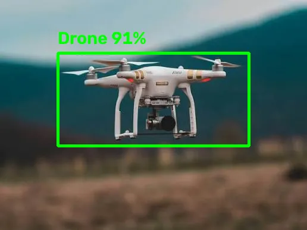
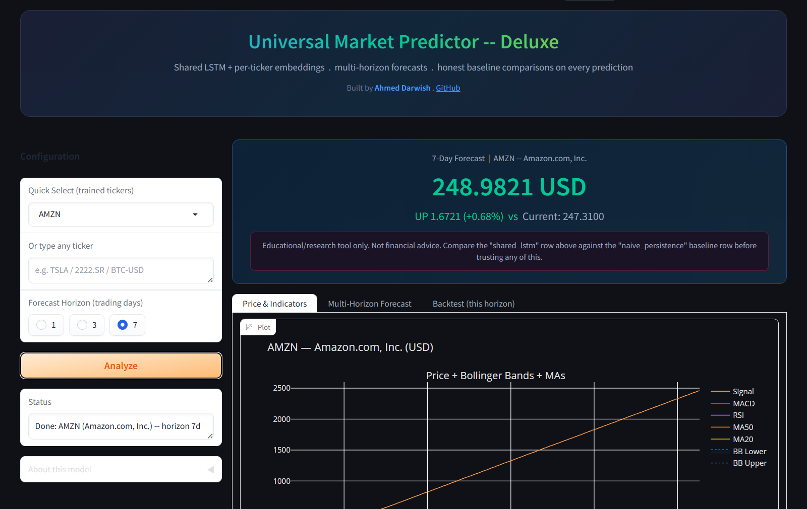
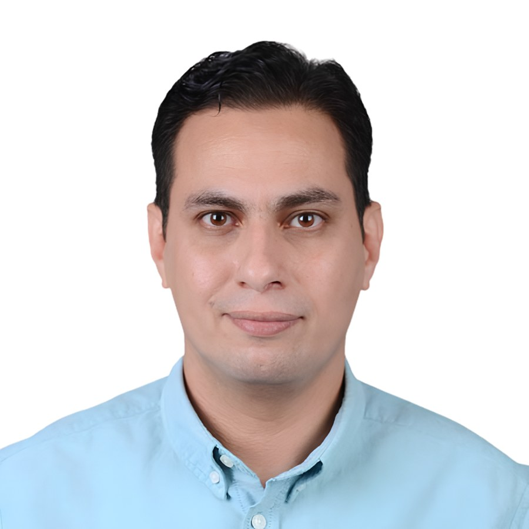
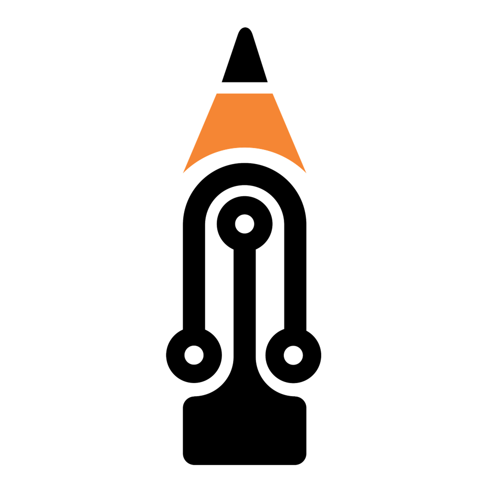

02
مشاريع مختارة


// الأرشيف الكامل
في مشاريع أكتر بكتير
من الأنظمة المدمجة والروبوتات إلى نماذج الذكاء الاصطناعي — كل المشاريع بتجربة حية وكود مفتوح.
عرض كل المشاريع ←> مرحباً، أنا
مهندس أنظمة مدمجة و ذكاء اصطناعي
«رقمنة عالمك تبدأ هنا»
أعمل على المسافة بين الفكرة والجهاز الذي يعمل: تصميم الدائرة، والكود الذي يشغّلها، والاختبار حتى التسليم. خبرة أكثر من 16 عاماً بين الأنظمة المدمجة والذكاء الاصطناعي، وتدريس ما أطبّقه في مشاريع حقيقية.

كلُّ دعمٍ يصل إلى Technopedia Arabia ليس تحويلاً مالياً فحسب، بل بابٌ يُفتح أمام طالبٍ أو مهندسٍ أو هاوٍ جديد، ليصله شرحٌ مجاني ومشروعٌ عملي ربما ظلّ بعيداً عنه بسبب اللغة أو التكلفة. هذا المحتوى ثمرةُ سنواتٍ من الخبرة الحقيقية، ولا يزال يتّسع ويتطوّر. ودعمُك — مهما صَغُر — يصير جزءاً أصيلاً من هذه الرحلة.
أحوّل الأفكار المعقدة إلى أنظمة مدمجة ذكية، وأبني جسوراً بين عتاد الهاردوير وخوارزميات الذكاء الاصطناعي. بخبرة تتجاوز 16 عاماً تجمع بين الهندسة والتعليم التقني، نفّذت أكثر من 150 مشروعاً ووجّهت أكثر من 250 مهندساً وطالباً تحت مظلة Technopedia Arabia.
هي مساحة عربية بابني فيها تقنية حقيقية وأشرحها بلغتنا. مش مدوّنة ولا كورسات — دي مشاريع شغّالة فعلاً، بكود مفتوح المصدر وتجربة حيّة تقدر تفتحها من المتصفح وتجرّبها بنفسك قبل ما تقرأ عنها سطر واحد.
بدأتها لسبب بسيط: قضيت سنين بشرح لطلاب ومهندسين عرب حاجات كانت مصادرها كلها إنجليزي وأغلبها مدفوع. الفجوة مكانتش في الذكاء، كانت في اللغة والتكلفة. فقررت أقفلها — كل حاجة بانشرها هنا مجانية ومفتوحة، عشان المهندس العربي يبقى باني للتقنية مش مستهلك ليها.

الشعار قلم رصاص — بس جسمه دايرة إلكترونية بمسارات ونقاط لحام. القلم هو التعليم والشرح، والدائرة هي الهندسة والتنفيذ. الاتنين جسم واحد مش حاجتين جنب بعض، وده بالظبط الفكرة: مفيش شرح من غير تنفيذ، ومفيش تنفيذ من غير ما يتشرح لحد تاني. والسن البرتقالي فوق هو نقطة البداية — أول سطر كود، أول دائرة، أول طالب.


من الأنظمة المدمجة والروبوتات إلى نماذج الذكاء الاصطناعي — كل المشاريع بتجربة حية وكود مفتوح.
عرض كل المشاريع ←عندك فكرة، مشروع، أو دعوة؟ اختَر نوع الرسالة واكتبلي.